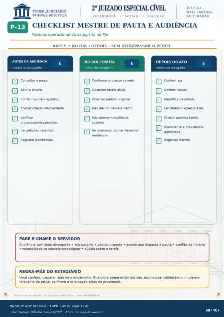

Transcrição automática em português, ainda não revisada. Confira grafia, prazos e termos jurídicos na imagem e no PDF antes de utilizar.
CHECKLIST MESTRE DE PAUTA E AUDIÊNCIA
Resumo operacional do estagiário no PJe
ANTES • NO DIA • DEPOIS - SEM ULTRAPASSAR O PERFIL
ANTES DA AUDIÊNCIA
Rotina do estagiário Consultar a pauta.
Abrir a árvore. Conferir audiência/status.
Checar citaçáo/AR/mandad0. Verificar
procuraçáo/d ocume ntos. Ler petições recentes.
Registrar pendências.
PARE E CHAME O SERVIDOR
NO DIA / PAUTA
Rotina do estagiário Confirmar processo correto.
Observar tarefa atual. Sinalizar pedido urgente.
Não decidir cancela mento. Não alterar modalidade
sozinho. Se orientado. apoiar Gerenciar
Audiência.
DEPOIS DO ATO
Rotina do estagiário Conferir ata.
Conferir status. Identificar resultado.
Ler determinações/prazos. Checar próxima tarefa.
Executar só a providência autorizada.
Registrar retomo. Audiência com dado divergente • ata ausente • pedido urgente • acordo que impacta a pauta • conflito de horário
necessidade de cancelar/redesignar • dúvida sobre a tarefa.
REGRA-MÀE DO ESTAGIÁRIO
Você confere, prepara, registra e encaminha. Quando a etapa exigir decisao, assinatura, validaçêo ou mudança relevante da pauta, confirme a orientaçáo antes de prosseguir.
Manual do estagiário • PJe material não oficial • controle individual_
Ver também o infográfico original (página 68)
